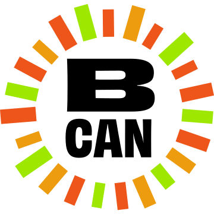
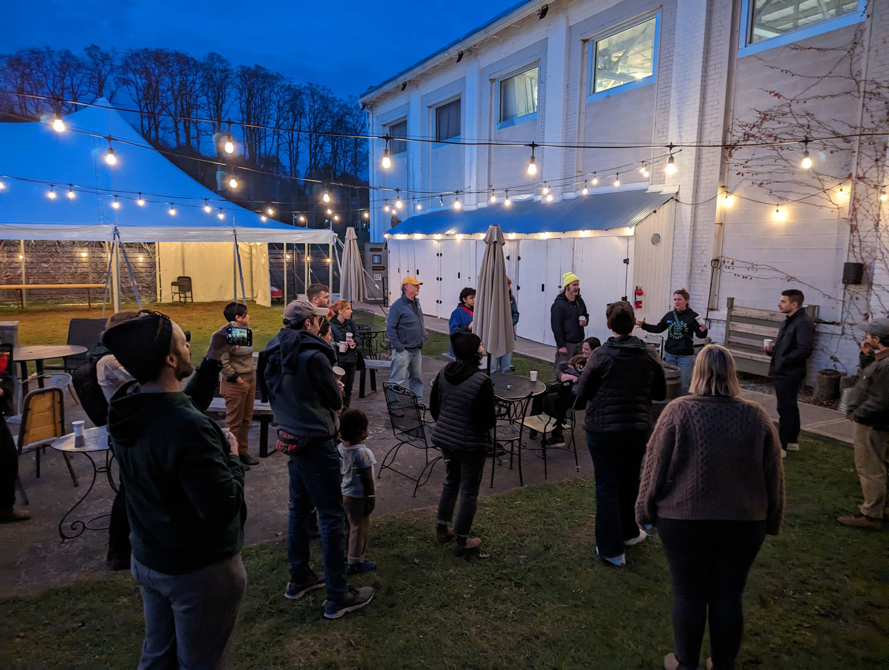
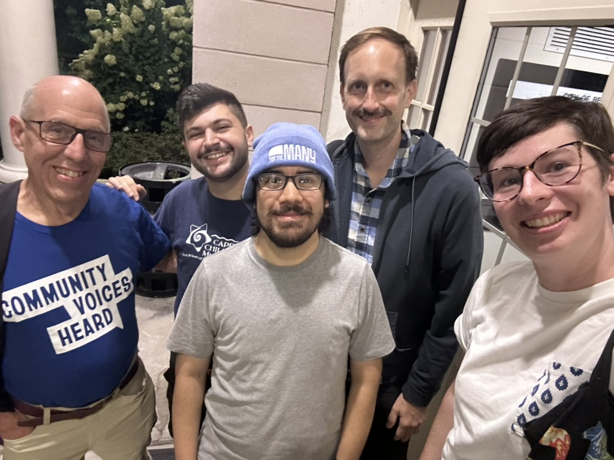
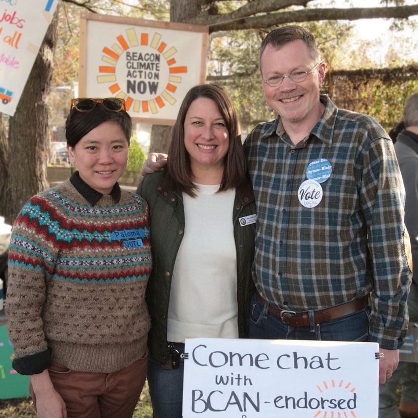
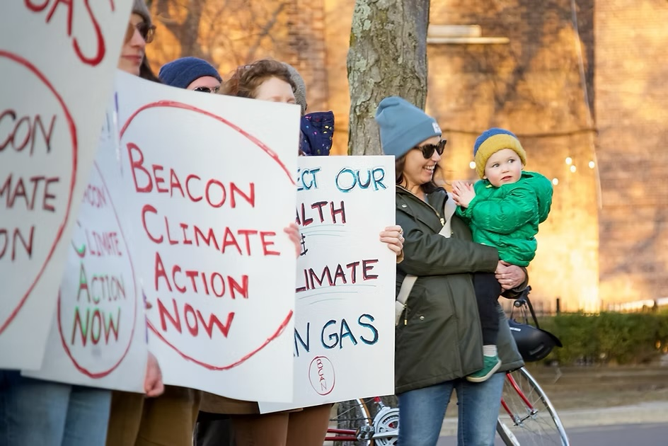
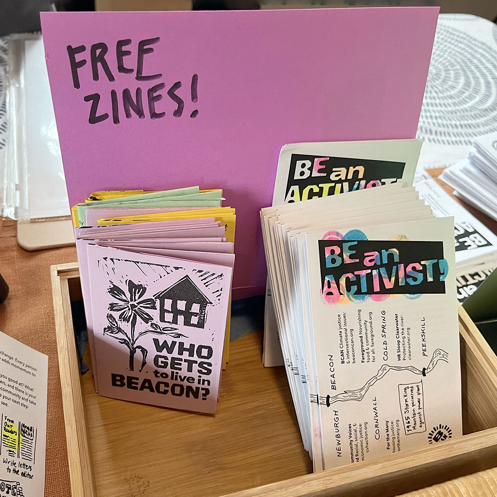

Fighting the climate crisis together
Beacon Climate Action Now
We are neighbors in New York’s Mid‑Hudson Valley working together to create a hopeful, joyful home for us all.
The Mid-Hudson Valley is our home, so we’ve come together to find political solutions for the climate crisis and empower communities to take action at all levels of government. We believe that the impact of our local organizing can ripple out well beyond our region to other parts of the state and the country.
Embedded in all of our work is the intentional prioritization of marginalized communities who are most impacted by the crises we face. From this context, we work to:
Recreate systems of care in our communities by participating in mutual aid, hosting free events, and partnering with other community groups.
Organize policy campaigns with tangible benefits for our communities and ensure an equitable transition to a future that leaves no one behind.
Elect leaders who champion bold, progressive policies that prioritize the needs of people and the planet over corporate profit.
We’ve accomplished a lot over the past few years. Here are a few wins from our major campaigns.
In 2022 we hosted our first Taproots Festival—a community event named for the guiding root of an acorn—and it has become an annual tradition.
Each autumn, Taproots gives our local community a glimpse of our vision for an abundant world: free admission, free food, free music, free activities for children. We invite many partner organizations to share their missions and encourage attendees to join them. Connecting to our neighbors and supporting the vibrant grassroots activism in our community is a core part of BCAN’s existence.

Affordable housing is top of mind for everyone in our community, as proven by the hundreds of conversations we’ve had with neighbors in Beacon and Fishkill over the years. It’s a complicated problem, but we’ve been advocating for equitable solutions that prioritize the needs of everyday people, not developers and private equity-backed landlords.
Through our active engagement with the Beacon City Council, we helped convince Beacon to earmark funds to raise public awareness of tenants’ rights and housing resources and devote staff hours to housing resource coordination and Good Cause Eviction enforcement.

In 2024, the Beacon City Council unanimously passed Good Cause Eviction, which will help protect tenants from exorbitant rent hikes and unfair evictions. BCAN worked hard to ensure that Beacon’s law is tailored as much as possible to meet the needs of our community, ensuring that the maximum number of renters are covered.
This win would not have been possible without the hard work of BCAN’s members and allies (including our friends at Community Voices Heard, Housing Justice For All, MHV-DSA, and For the Many), who wrote letters and emails, spoke out week after week at City Council, and met with their ward representatives.
We have a long way to go to build a more affordable, accessible community, but this was a key first step to keep people in their homes.
Learn about New York State’s Good Cause Eviction Protections

Green jobs. Housing for all. A livable community.
We believe that local government can (and should) make a direct, positive impact on people’s lives. That’s why we’re calling on our leaders to embrace policies that put the needs of our Hudson Valley community and environment first.
To start, we talked to neighbors in Beacon, Fishkill, and Poughkeepsie to understand what folks’ concerns and priorities are—and how we can make the government work better for us all. Our Beautiful Future starts now, and it starts with us.
We also endorsed local candidates in the 2023 election cycle who supported our vision and pledged to champion it while in office.

In 2023, Beacon became the third municipality in New York State to pass legislation prohibiting the use of natural gas in nearly all newly constructed buildings and major renovations. The move will save residents money on their utility bills, cap fossil fuel emissions from buildings in the city, and protect the health of children and families.
BCAN spent months talking to our neighbors, collecting over 400 in-person petition signatures, collaborating with two City Council members as allies, and speaking up in City Council meetings, among other tactics. Thanks in part to those efforts, Beacon passed one of the strongest electrification mandates in the country.
This bolstered support for NY State’s All-Electric Buildings Act, which passed soon afterward as part of the state budget.

We make zines to ignite action, build awareness, and mobilize readers toward a better collective future.
In today’s political climate, we find strength in knowing that our actions matter more than ever—and that we are not alone. If you’ve ever felt afraid or powerless in the face of our administration’s beliefs and actions, this zine is for you. We created Be an Activist to empower you to build community, support it, and fight for the future you believe in. No action is too small.
Download: Onscreen PDF | Print-and-fold PDF
When the Beacon City Council unanimously passed Good Cause Eviction, we were able to convince the council to tailor the law to cover the maximum possible amount of people. The zine we created for the campaign incorporates local data, excerpts from interviews with local residents, and our proposed solutions.
Download: Onscreen PDF | Print-and-fold PDF
